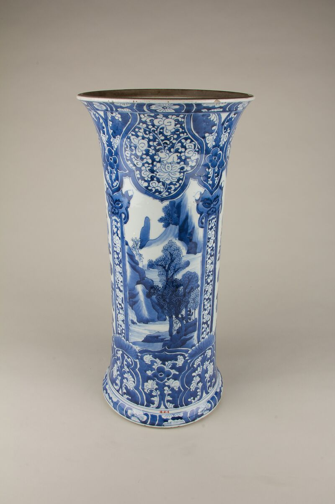
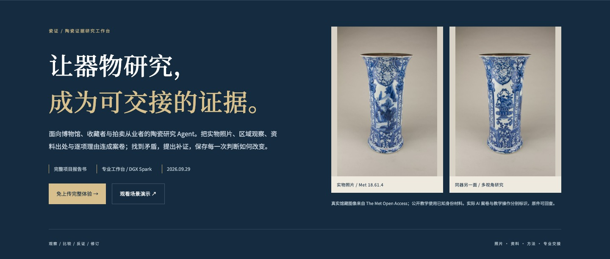
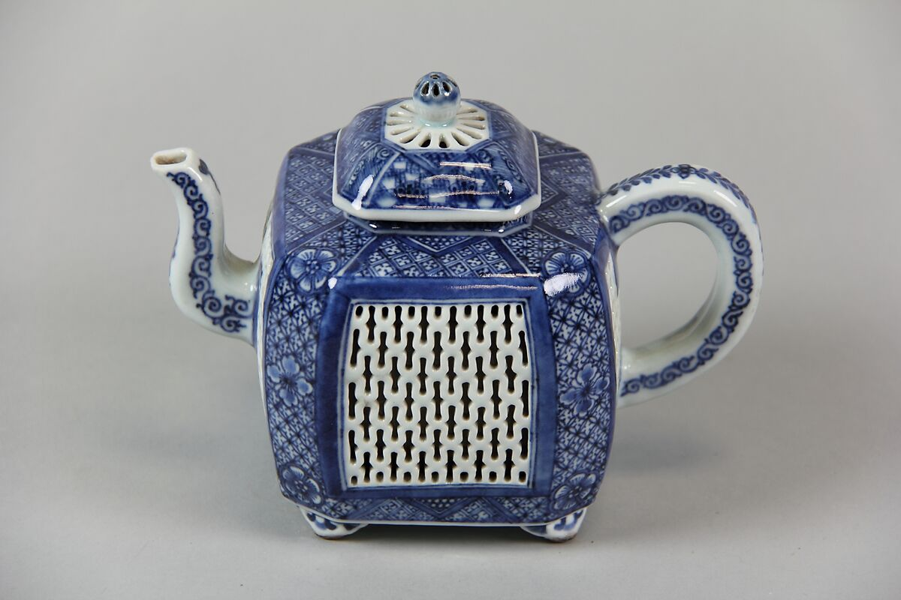
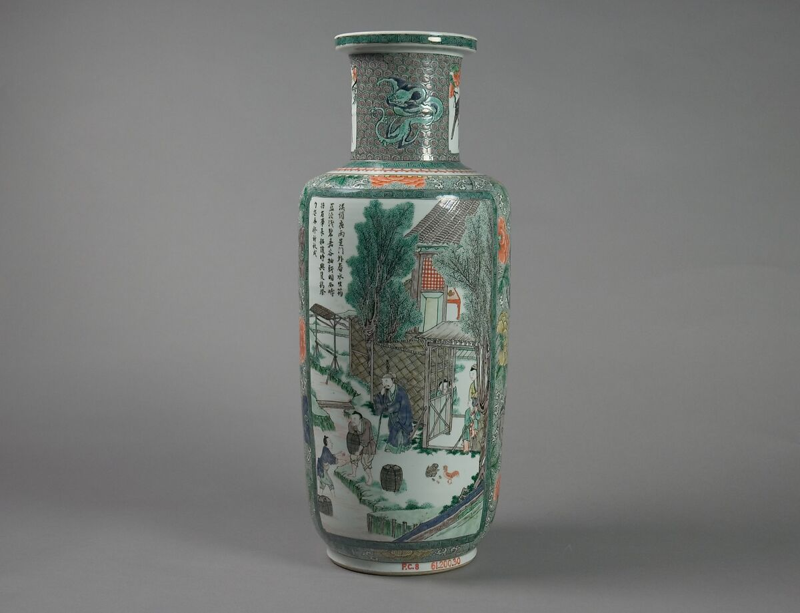
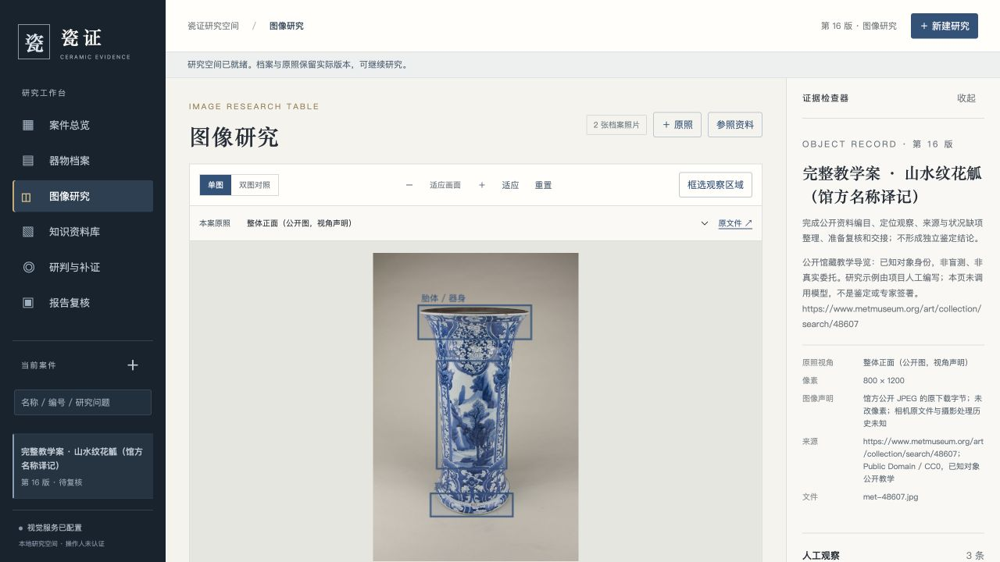
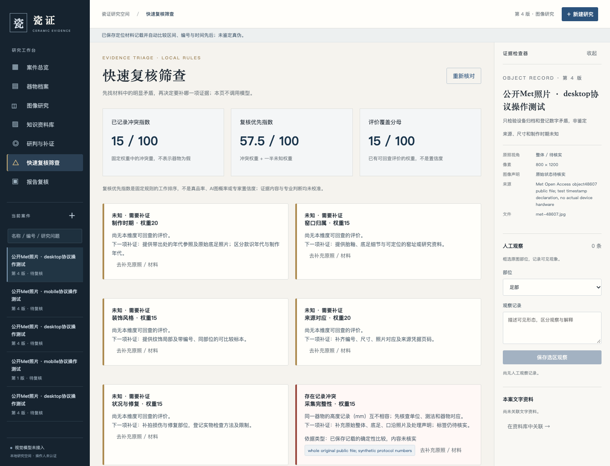
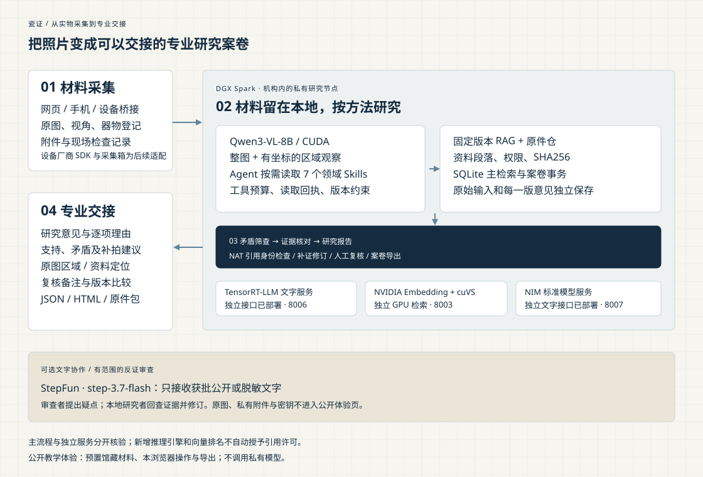
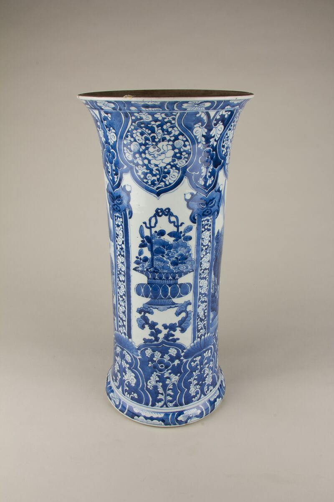

01 / 博物馆编目与研究
从馆藏登记，到研究案卷。
分开馆方记载与图像观察，关联文献段落，记录视角缺口。留下可定位、可修订的编目依据。
- 登记
- 观察
- 参照
- 复核
面向专业工作的陶瓷证据研究
陶瓷证据研究工作台
把原图、观察、文献与研究意见连成一份案卷。
从编目到复核，让下一位研究者接得上。
图文项目报告 · 真实 AI 案卷与理由 · 可回查、可打印


三种工作的专业交接
同一条证据链，
服务三种工作的交接。
分开馆方记载与图像观察，关联文献段落，记录视角缺口。留下可定位、可修订的编目依据。

将器物资料、来源事件与原始附件联系起来。缺少的交易或修复经历保留为待核事项，逐次补充。

按观察、资料和意见整理描述，核对归属措辞与条件说明。交付时带走报告、原件及文件清单。
三件样例均为 Met 已知身份的公共领域馆藏，业务角色用于教学；并非实际委托、拍卖批次或鉴定盲测。
先看流程，再亲手完成

观看演示 · 体验功能
新版场景演示配有中文旁白与字幕，带你看懂博物馆编目、收藏交接与图录核查；真实界面、教学操作和保存的模型记录分别标识。
照片、档案和来源已齐备。选一个角色，即可开始。
编辑观察，点击证据，回到原图区域或资料段落。
纳入预置补充材料，检查记录和意见具体改了什么。
保留人工备注，导出报告、原图和 SHA256 文件清单。
修改保存在本浏览器。可编辑档案、定位证据、阅读 Skills、比较补证版本、填写复核并导出 JSON / HTML / ZIP；导出始终保留教学标记。
新功能 / 可解释的快速筛查
制作时期、窑口、装饰、来源、状况与采集六个维度，分列相符、冲突和未知。自动发现记载区间、来源时间与器物编号的矛盾，提出具体复核和补证任务。
数字有含义。复核优先指数用于安排工作，同时显示已评覆盖；不把未知当成无风险，不将指数称为真品率。
记录有出处。专业工作台的材料记载绑定本案原件、位置和哈希，补正保留历史。
现场有入口。统一采集接口和可运行客户端，将设备照片、视角与检查元数据纳入同一案卷；品牌 SDK 与桌面采集箱按路线逐步适配。

本地视觉研究 · 可回查的依据
专业工作台将视觉处理、方法执行和案卷存储放在指定本机 / DGX Spark。只有批准的公开或脱敏文字，才进入可选的外部文字审查。

原图、视角、器物登记与检查记录，绑定到案卷。
Qwen3-VL-8B / CUDA；Agent 读取 7 Skills 与固定资料，原图留在服务所在本机。
解释冲突与未知，回查正文和原图，保存修订，导出报告与原件。
只发送批准公开或脱敏文字；本地模型回查并修订。
NIM 标准模型接口、TensorRT-LLM 文字推理和 NVIDIA Embedding + cuVS 资料检索已实际部署；主视觉研究路径持续运行。
私有工作台的原图由指定本机 / Spark 服务保存和处理；后端部署在笔记本时，笔记本也保存原图。公开教学页无需上传材料。
SQLite 关键词检索提供固定资料段落，7 个自研 Skills 按需加载。研究引用绑定成功读取回执，后续资料更新保留原依据。
StepFun 适配器只接收经批准的公开或脱敏文字。NAT 核查引用身份；研究意见的实质支持和最终归属仍需人工复核。
Skills · 明确研究的下一步

方法示例 / 青花比较研究
以山水纹花觚教学案为例：先区分可见器形、纹饰与馆方记载；再读取可定位参照，列出支持、冲突及竞争解释。新增一张同器照片后，比较哪些观察可以更新，哪些归属仍缺少证据。
方法示例用于教学，不能仅凭风格相似推定年代或真伪。
先确认任务，再检查输入与缺失部位。
02 / RECORD分开器物登记、图像观察与资料记载。
03 / COMPARE提出竞争解释，保留相似之外的限制。
04 / CONDITION区分照片迹象、状况假说与实物检查。
05 / PROVENANCE核对来源事件、同器联系和原始凭据。
06 / DOCUMENTS读取许可文字，分列相符、冲突与缺失。
07 / REVISE指出新证据改变了什么，保留历史意见。
每个包提供 SKILL.md 与参考资源，固定实际采用的整包版本。领域方法为项目自研，后续将开展独立专家样本验证。
体验、部署与继续开发
公开体验与专业部署，
各有清楚的范围。
三套完整案卷，无需上传。支持编辑、证据定位、补证比较、复核和导出；研究示例人工编写，此页不调用模型。
打开教学工作台部署案卷服务与私有视觉模型，保存真实调用、引用和修订记录。Qwen3-VL-8B 已执行真实双图研究、批准文字审查和两版导出；支持采集桥接与有理由的复核优先指数。
查看部署方法25 条项目原创来源摘要，附机构链接、适用范围和局限。用于可定位参照；引用保留实际读取版本与段落。
浏览摘要与来源瓷证辅助研究与案卷整理。当前为单人受控试用，不提供实物检测、价格评估、可信专家签署或自动鉴定证书；“采集覆盖指数”不是真品概率。
BEGIN WITH ONE OBJECT
照片和材料已经备齐。打开案卷，开始你的第一条观察。
立即体验